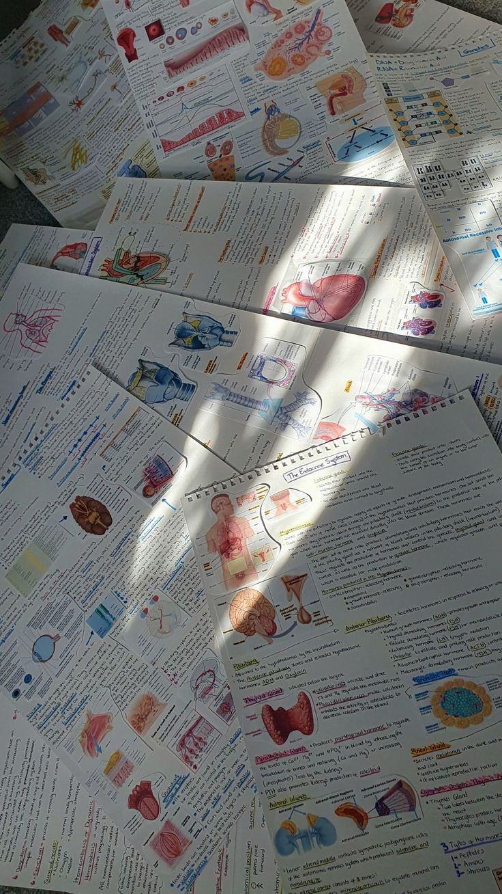

Discover the Wonders of Science.
Kenali berbagai fenomena alam dan pahami bagaimana dunia bekerja. Pelajari sains melalui konsep, pengamatan, dan contoh yang dekat dengan kehidupan sehari-hari.
Explore Materials →
Understand the World Around You
Program IPA Lumora Academy membantu peserta memahami berbagai konsep ilmu pengetahuan alam, mulai dari makhluk hidup, benda, energi, hingga fenomena yang terjadi di lingkungan sekitar. Pembelajaran disusun secara bertahap dengan penjelasan, contoh, dan latihan untuk memperkuat pemahaman.
Explore and Understand Science
Kemampuan yang dikembangkan melalui program IPA.
Scientific Thinking
Mengembangkan cara berpikir berdasarkan pengamatan dan penalaran ilmiah.
Understanding Nature
Memahami hubungan antara makhluk hidup, benda, dan lingkungan.
Problem Solving
Menggunakan konsep sains untuk memahami berbagai permasalahan sehari-hari.
Explore the Science Topics
Berbagai topik pembelajaran yang akan dipelajari.
Biologi
Mempelajari makhluk hidup, sel, organ tubuh, ekosistem, dan hubungan antarorganisme.
Fisika
Memahami gerak, gaya, energi, suhu, cahaya, dan berbagai gejala alam.
Kimia
Mengenal materi, unsur, senyawa, campuran, serta perubahan zat.
Ekosistem dan Lingkungan
Mempelajari interaksi makhluk hidup dengan lingkungan dan keseimbangan ekosistem.
Bumi dan Antariksa
Mengenal struktur bumi, tata surya, cuaca, dan fenomena alam.
Observe, Explore, and Understand
Pembelajaran dilakukan melalui penjelasan konsep, ilustrasi, pengamatan fenomena, contoh penerapan, dan latihan soal. Dengan begitu, peserta tidak hanya menghafal materi, tetapi juga memahami alasan di balik berbagai fenomena alam.
Every Discovery Begins with Curiosity.
Mulai petualangan mengenal dunia sains bersama Lumora Academy.
Explore Other Programs →